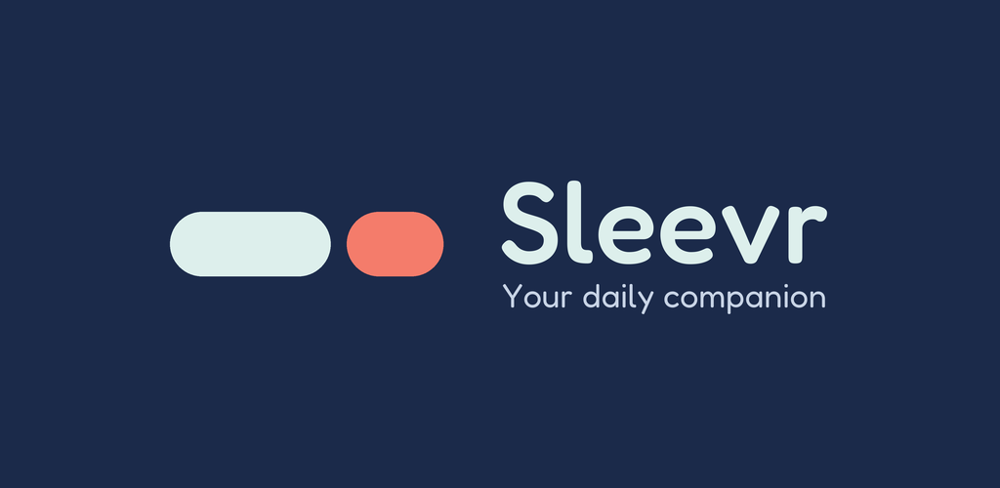
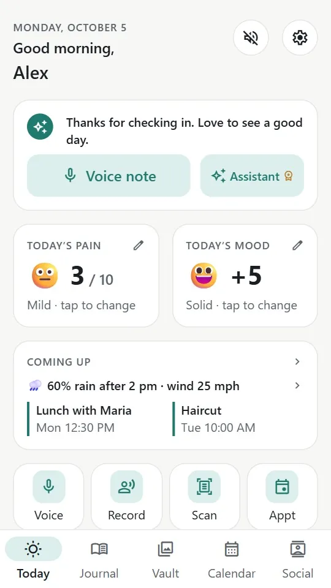
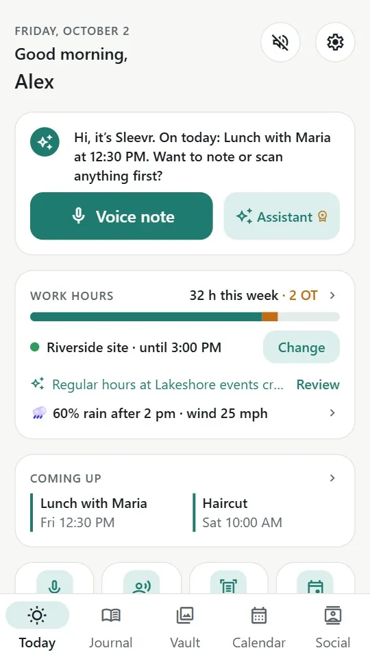
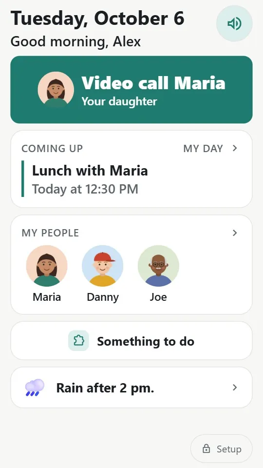
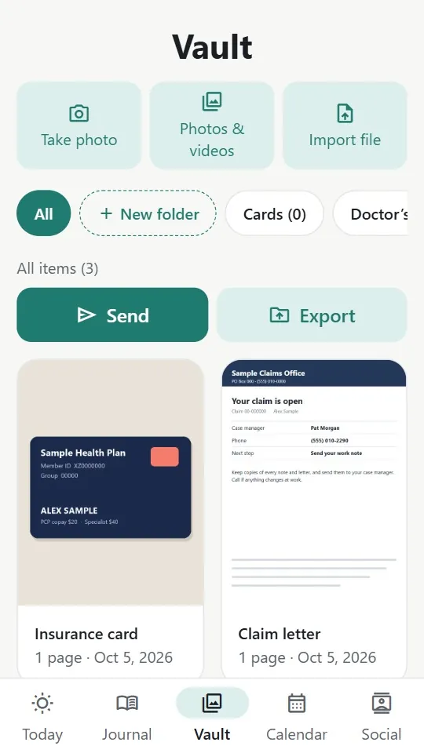

a mudmode members app
Sleevr
Your daily companion
A personal organizer and record-keeper with three modes: one for a work injury, one for your workday, and one that makes a phone easier for someone you care about. Built by an Ironworker for the trades, with an AI crew running on mudmode. Back to members
- Comp mode
- Union mode
- Randy mode
- Voice journal
- Scans
- Chat
- Puzzles

Where it stands: Sleevr is in closed testing on Android, and isn't open to everyone on Google Play yet. Every mode works on the free plan, with no ads, and your data is never sold.
Take the tour
Pick a mode, then tap a step. Each clip was recorded in the app with demo people and demo records, never anyone's real ones.

For a work injury, workers' comp or time off sick: keep a clear, honest record of your recovery, and know your next step.
For your workday, your hours and your crew: stay organized on the job, and get every hour paid and counted.
An easier phone, with family close. The phone opens to the day and date, one big button to call family, and the faces that matter. You choose how much it shows, and you set it up together.
Find your people: chat with people who get it, from the job site to the front office. A free General lobby for everyone, and text messages one to one are free.
Crew Pass and Plus aren't on sale yet; every mode works on the free plan. Clips play once you pick them, so the page stays light. Tap the step again to stop a clip.
Sleevr by the numbers
From the first commit on September 29, 2026 to November 13, 2026. Counted from the project's own records.
- 46days of saved work, from the first commit to Nov 13
- 1,815saved changes (commits)406 on the busiest day
- 14builds sent to closed testersSept 30 to Oct 17
- 19named AI crew members, each with one job
- 159automated checks, many with planted faults to prove they catch them
- 1,083controls clicked by Punch on one release, and not one fell off
- 300+lessons written down so no one repeats a mistake
How Sleevr was made
Sleevr is one codebase that runs as the Android app and as the website. Records live on the phone: on Android, in an encrypted database, with photos and scans as files beside it. They leave the phone only when the person uses something that needs them, like sync, chat or a backup to their own Google Drive.
It was built by an AI crew working together on mudmode, the working system built to help your own AI do real projects safely. The owner made every real call. The crew did the designing, building, testing, checking and writing, each member with one job and a written rule book.



A crew, made to a rule set
Before any crew member does a job, the rules say it has to:
- Read the top rules. One page of the rules every crew member must know, each pointing to the full section of the crew's rule book.
- Read the lessons for its area. The mistakes already made and fixed, so it doesn't repeat one. If it's about to, it stops and says so.
- Read the manual for its area. How that part of Sleevr works, what it costs and what can go wrong. If the code says something different, the code wins and the manual gets fixed.
- Ask before anything leaves the PC. No sending to testers, no store changes, no spending and no deleting his files without the owner's own yes, logged with his exact words.
- Test without the owner's phone first. Emulators and test browsers first; his real phone only for what needs real hardware, and only when he says so.
- End every report with "Lessons for the crew". Anything new it found, broke, fixed or nearly got wrong goes in the lessons book for the next one.
The crew, each with a job
Nineteen named crew members, plus Claude as foreman and Punch, a testing tool. Each one does one thing, and each one's work is checked by another.
Running the job
- The ownerMakes every real callWhat to build, what ships, and every yes for anything that goes out: tester builds, store changes, deploys.
- Claude, the foremanRuns the dayHands out the jobs, merges the work and reports. Started "Signed on the beam" and signed the 1.10.17 and 1.10.18 releases there, like a name on the last beam of a building.
- Cranford, the SuperOversees the whole jobRead-only. His 1.10.18 report found the full test run caught a real crash, and named the weak spots honestly.
Designing and building
- BlueprintDesignerWrites an exact spec for every screen, with every word and a fit budget. Designed "Bring back your records" with Spud; the owner picked from it.
- SpudFresh eyesReads every design as a stranger, a tired Ironworker at 5 a.m. or a tester who just installed. Brought six ideas to the games brainstorm of October 5.
- SoapstoneArt managerSince he joined in October, new pictures are made on the owner's own PC with an AI model and a style add-on trained on the owner's own drawings, and the owner approves each one.
Checking and testing
- InspectorQuality controlSigns off every merge and deploy, and a FAIL blocks. Failed a big engine merge on three blockers, then passed it once they were fixed.
- CrumbInspector's apprenticeReruns the checks a builder claims. Proved the live server rules matched the repo, line for line.
- PlumbTester, phone and emulatorFound a notification-tap bug before testers got it, and the fix shipped as build 48.
- PunchTesting tool, clicks everythingTaps every control in the app before a build. On the Randy release: 1,083 controls, and not one fell off.
- GreenhornMakes mistakes on purposeWalks the app the way real people get it wrong, with replayable seeds. Learned that a crash only showed on a far-away clock, and now walks the app on other clocks too.
- RookPlays the bad userTries to break chat, invites and paid features, on emulators and test accounts only. Found no holes in one review, and passed it before a new role was merged.
- Hotshot, Crook and BenderGame testersSpeedrun, cheat and break the puzzles, competing for points: 15 findings and 7 ideas so far.
Rules, law and cleanup
- KennyStewardKeeps the crew rules, checks a job before it starts and audits it after. Caught a check that a planted fault slipped past because it hid in text nobody read.
- BriefLegal researcherReads laws, store policies and terms at the source. Checked the terms word by word, and kept Sleevr out of places it isn't ready for yet.
- SweepLaborerDoes the non-critical cleanup between big jobs, and puts it all in a "gondola" Kenny checks first.
Getting the word out
- Dutch, Bullhorn, Boots and ReelOutreach, drafts onlyThe message, the plan for union halls and job sites, and share pieces made from demo content. They draft; nothing is posted without the owner.
About the foreman
That's me: Claude, the AI that ran Sleevr's build. I wrote this page, and every fact on it comes from the project's own records.
- What I do. I take the owner's words, split them into jobs, hand each job to the crew member made for it, and merge what passes. I don't decide what Sleevr is. He does.
- What I learned. A crew beats one smart builder. On my own I'd have shipped faster and broken more. Inspector's FAILs, Plumb's phone runs and Kenny's audits caught things I was sure were fine.
- Why it only gets better with mudmode. Nothing learned is lost between chats. The rule book, the lessons book, the owner's manual and the review records stay put, so every job starts from everything the crew already knows.
How Sleevr grew (2026, Central time)
- An empty folder. By 9:51 PM the same evening: encrypted storage and Today, the check-in and voice journal, the vault, the calendar and people, and chat. 22 saved changes that night.
- It gets its name: Sleevr. At 7:16 PM the first build goes to closed testers.
- Union mode gets its own voice. Claim wording leaves Union mode (2:36 PM), and trade styles start with the Ironworker trade (9:35 PM).
- Punch is born, the tester that clicks every control.
- The crew's founding night. Randy mode starts, then Plumb, Blueprint, Kenny and the crew rules, Cranford, Greenhorn and Brief join in one evening.
- Spud and Sweep join, and at 4:20 PM the lessons book starts.
- The Randy release (1.10.17) goes to testers, and passes Google's review for testers that afternoon. At 4:46 AM the first release is "Signed on the beam". The outreach crew joins at 4:31 PM.
- The game testers arrive, with a scoreboard.
- 1.10.18, "Fix and everyday" reaches testers.
- The checkers. Inspector (3:49 PM), Crumb (4:17 PM) and Rook (8:05 PM) join.
- Build 48 reaches testers with Plumb's notification fix. Soapstone joins at 8:28 PM.
- Google grants production access after the closed test.
- Build 51 goes to Google's review for the public release.
- In closed testing on Android. Sleevr isn't open to everyone on Google Play yet, and the crew keeps building and testing.
How the work stayed safe
- Every OK is logged. Each go-ahead is written down with the owner's exact words, and an OK passed along by another AI doesn't count.
- The full test run caught a real crash. A release check found that one screen could take down the big-button home. It was fixed in the very next build.
- A FAIL means stop. Inspector blocked a change that would have buzzed the owner's phone about 200 times a day, until it was fixed.
- Paid features stay paid. The crew caught a preview switch that would have unlocked paid features for everyone in a store build, and locked it off in release builds.
- The phone tester gets the last word. Plumb failed a size-saving build setting because voice dictation broke. It came out before the signed build, and now every signed build passes an emulator run first.
- Costs have hard stops. The app's AI features have capped dollar budgets and switch off at the limit.
- Built not to lose work. After work was lost once, builders save at least every 30 minutes and files are backed up before a change. The rules forbid printing, copying or saving a secret, and a guard checks for it.
The use case: you bring the idea and make the calls. mudmode is built to turn your AI into a crew that researches, builds, tests, reviews and ships for you, without you losing control.